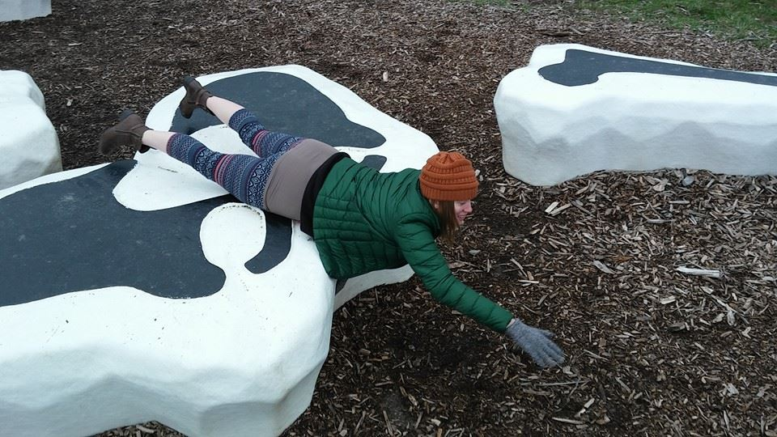

About Me

Welcome! Badass scientist lady here who currently spends her days trying to find a cure for cancer. I work as a laboratory manager in the Biochemistry and Molecular Genetics Department at Northwestern University studying the pathogenesis of many cancers, including leukemia. Over this course of study we generate massive amounts of genomic sequencing data every day. Having spent a lot of time generating and analyzing Next Generation Sequencing (NGS) data has instilled a desire in me to dig in deep and really understand the computer languages and techniques required to manage and interpret vast amounts of data. Through the Northwestern Coding Bootcamp program I hope to accumulate the skills and expertise to take both my career and my contributions to society to the next level.
In addition to my love of science and coding, I enjoy an active pursuit of hobbies. Since moving to Chicago over 2 years ago, I haven't ever found myself not enrolled in some type of course or activity. From improv to drawing to guitar, I enjoy learning a little bit about everything. My most recent adventure invoves learning how to whitewater kayak. I am looking forward to getting out on the river this summer to soak in the nature and try out my new skills!
Connect with Me